Part 1.1: Convolutions from Scratch
Four-loop convolution
def convolve_four_loops(image, kernel):
height, width = image.shape
kernel_height, kernel_width = kernel.shape
flipped_kernel = np.flip(kernel, axis=0)
flipped_kernel = np.flip(flipped_kernel, axis=1)
padded = np.pad(
image,
((kernel_height // 2, (kernel_height - 1) // 2), (kernel_width // 2, (kernel_width - 1) // 2))
)
output = np.zeros((height, width))
for y in range(height):
for x in range(width):
total = 0
for kernel_y in range(kernel_height):
for kernel_x in range(kernel_width):
total += (padded[y + kernel_y, x + kernel_x] * flipped_kernel[kernel_y, kernel_x])
output[y, x] = total
return outputTwo-loop convolution
def convolve_two_loops(image, kernel):
height, width = image.shape
kernel_height, kernel_width = kernel.shape
flipped_kernel = np.flip(kernel, axis=0)
flipped_kernel = np.flip(flipped_kernel, axis=1)
padded = np.pad(
image,
(
(kernel_height // 2, (kernel_height - 1) // 2),
(kernel_width // 2, (kernel_width - 1) // 2))
)
output = np.zeros((height, width))
for y in range(height):
for x in range(width):
img_patch = padded[y:y + kernel_height, x:x + kernel_width]
output[y, x] = np.sum(img_patch * flipped_kernel)
return outputFilters
box_filter = np.ones((9, 9)) / 81
dx = np.array([[1, 0, -1]])
dy = np.array([[1], [0], [-1]])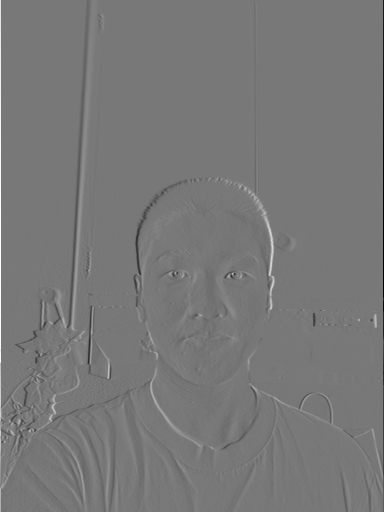
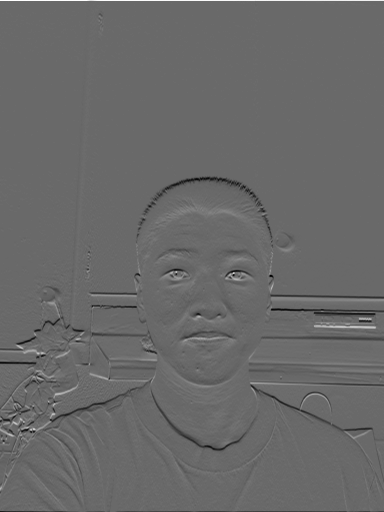
Comparison with SciPy
To compare my implementation with the built in SciPy implementation, I compared every output pixel with SciPy using simple loops to track the largest difference. Both implementations matched exactly for the derivative filters, and the box-filter differences were below 10−15, which seems consistent with rounding differences from using floats.
As for the runtime, for the 9 × 9 box filter, the two-loop implementation was faster because NumPy handled the multiplication and summation over each image patch. For the smaller derivative filters, the four-loop implementation was faster because calling NumPy separately for every pixel added a good amount of time. SciPy was clearly and by far the fastest for all three filters. This was all measured using the perf_counter() from Python’s built-in module, subtracting the start time from the end time for each call.
My implementation follows directly the class definition of convolution, by flipping the kernel horizontally and vertically before multiplying it with each image patch and summing the products.
As for border handling, I used zero padding to ensure that the output was the same size as the input, which is matching SciPy’s mode="same". Further, pixels outside the image are treated as zero, which can also have a side effect of creating artificial edges or darken blurred regions near the image boundaries.
| Filter | Four loops (s) | Two loops (s) | SciPy (s) |
|---|---|---|---|
| 9 × 9 box | 2.082722 | 0.366376 | 0.012711 |
| Dₓ | 0.117111 | 0.298040 | 0.001254 |
| Dᵧ | 0.135323 | 0.295890 | 0.002114 |
Part 1.2: Finite Difference Operator

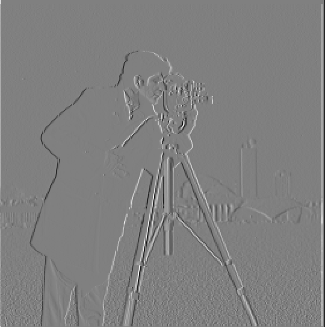
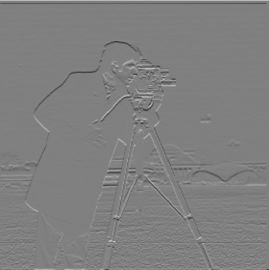
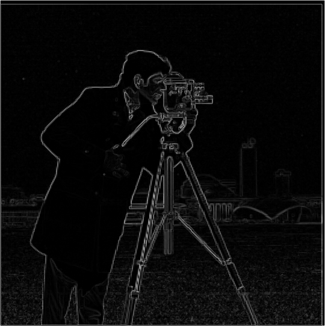
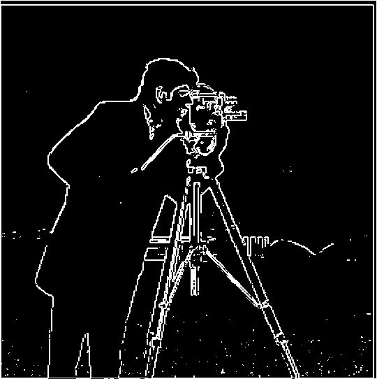
I chose a threshold of 0.25. I decided on this after testing several values and comparing the resulting edge images, and 0.25 ended up best preserving the main outlines of the cameraman, camera, and tripod while suppressing a good amount of the weaker background texture. In my experiments, it seemed that higher thresholds removed more noise but also created more gaps in the cameraman’s outline, so I thus settled on 0.25 because it struck a good balance between retaining important edges and also removing noise. However, some scattered responses remain, near to the ground.
Part 1.3: Derivative of Gaussian (DoG) Filter
Gaussian smoothing
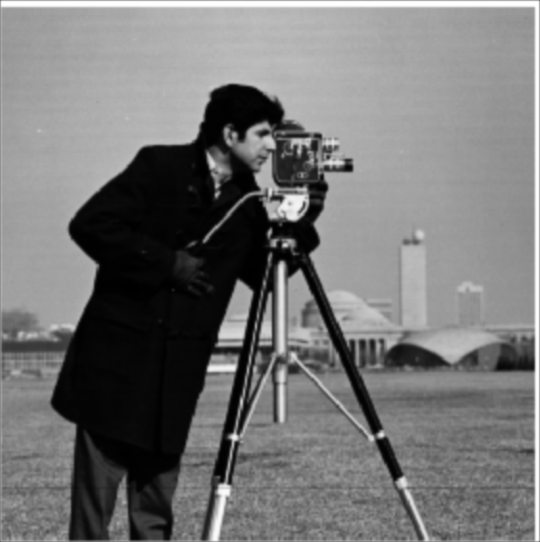
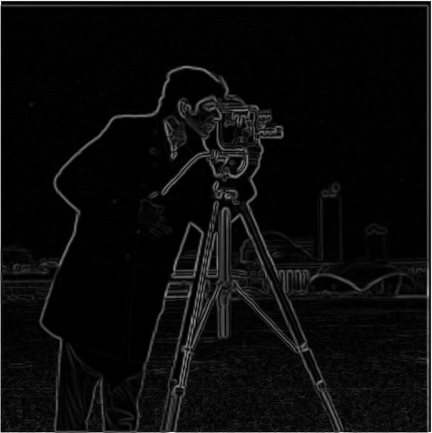
Derivative of Gaussian filters
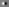
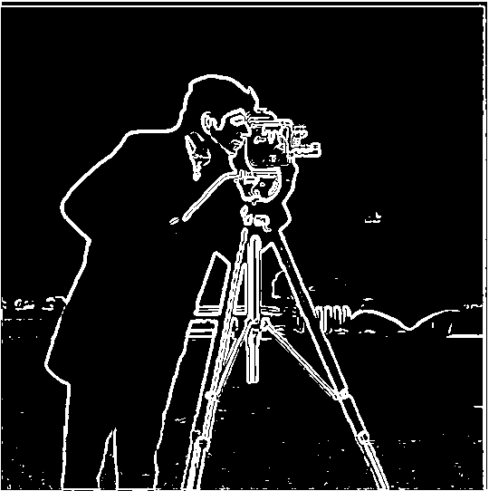
Comparison and verification
Compared with finite differences alone, the Gaussian smoothing seems to have reduced scattered responses in the ground and also produced smoother, and more continuous outlines. Further, some fine details disappear, and the thresholded edges appear thicker. After testing thresholds of 0.10, 0.12, and 0.14 on the smoothed image, I settled on 0.12 because it reduced more ground noise than 0.10 while retaining more edge detail than 0.14. I used a lower threshold after smoothing because blurring makes the edges weaker, so a higher threshold would miss more of them.
The DoG filters give the same result as smoothing first and then taking finite differences, up to the floating point rounding errors (within the image interiors)). To verify, I calculated the maximum absolute differences to be very small and due to rounding: approximately 7.97 × 10−16 in x and 7.45 × 10−16 in y. I excluded a four-pixel border from this comparison error calculation because the methods handle the image edges differently; the two-step method pads the blurred image again before taking derivatives, while the DoG method applies the combined filter to the original image in just one step.
Part 2.1: Image Sharpening
Unsharp masking makes an image look sharper by strengthening its high-frequency details, such as edges and fine textures. To begin the process, first, a Gaussian blur smooths out these details. Basically, the Gaussian acts as a low-pass filter: it will preserves gradual changes in brightness, while also reducing rapid changes between nearby pixels, which correspond to high frequencies. After subtracting the blurred image from the original, this isolates the high-frequency component, which is then scaled and added back to the original to make the details stand out more. Adding this component back essentially strengthens the rapid brightness changes around edges, making the image appear sharper.
I combined these steps into a single convolution and compared sharpening amounts of 1 and 2. From the results, we can see that a larger sharpening amount makes edges and textures more pronounced, but can also make them look exaggerated.
Taj Mahal
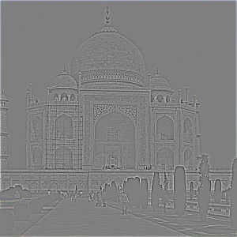
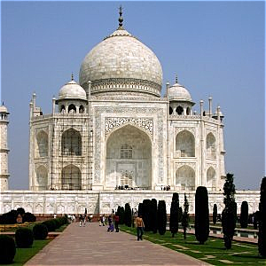
Old State House, Boston
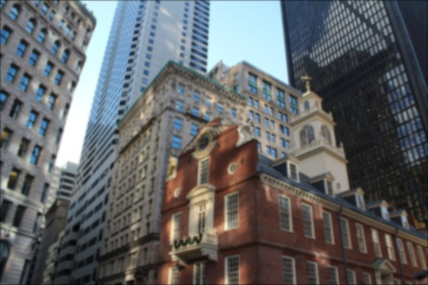
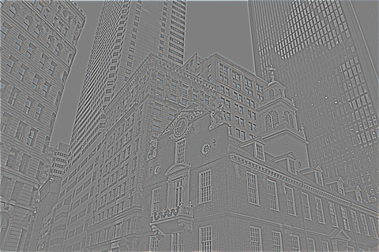
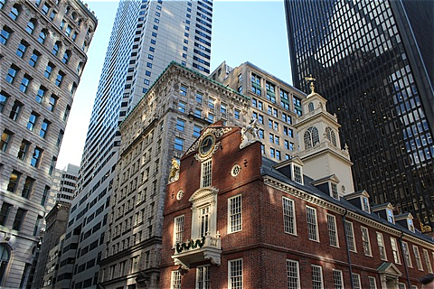
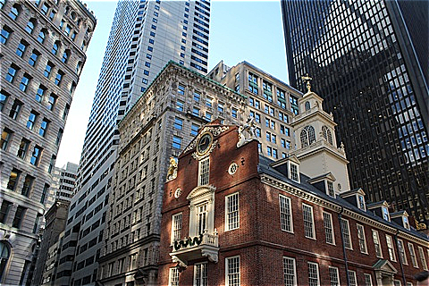
Blur, then resharpen: observations
This is the Old State House in Boston, where I'm from. Starting with a regular image, after blurring it with the Gaussian filter, the sharpening operation was then applied to the blurred image. You can see that in the blurred version, the window frames, brickwork, and building outlines become softer, and the smaller architectural details are harder to distinguish.
After resharpening, the edges become more distinct again, so the result looks clearer than the blurred image. However, when I compare it with the original sharp image, some of the fine detail is still missing. In particular, the original has clearer separation between small features in the windows and building surfaces.
This experiment shows that sharpening does not completely reverse the blur.
Part 2.2: Hybrid Images
Derek + Nutmeg: full process
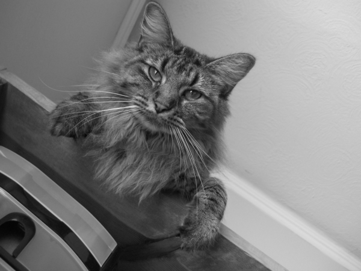
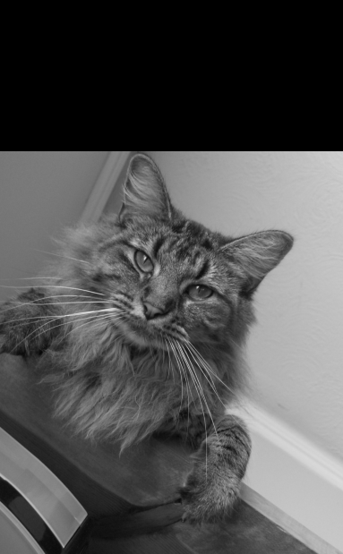
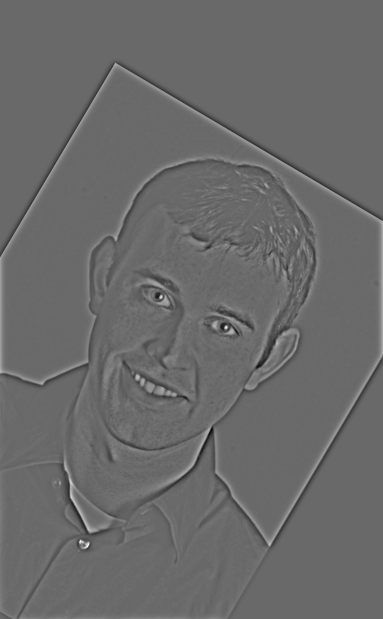
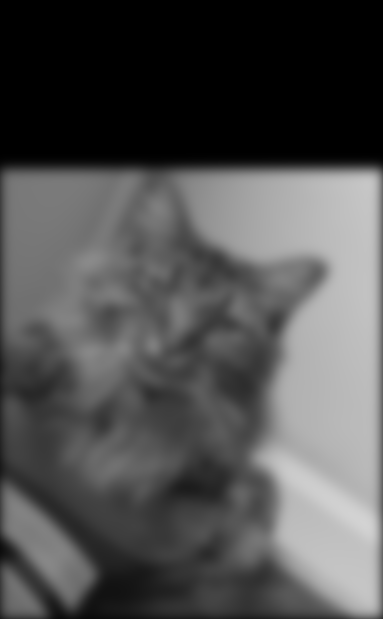
Fourier analysis
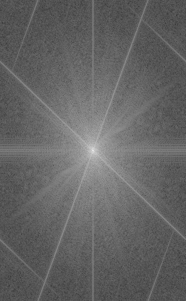
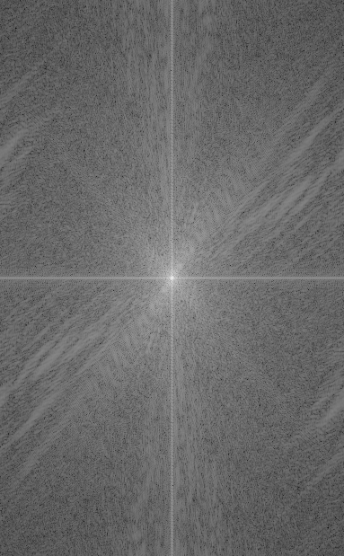
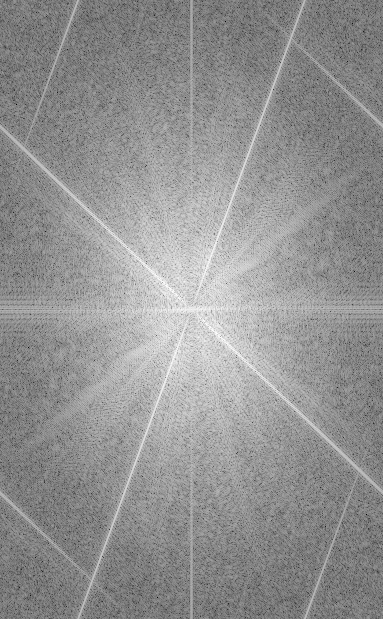
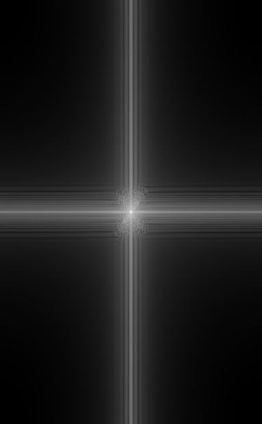
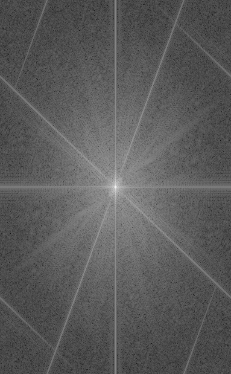
My chosen images
For my custom experiments, I chose two of my favorite sports players, Drake Maye and Payton Tolle, and paired each with an animal that I think represents them: a golden retriever for Maye and a brown bear for Tolle.
Drake Maye + golden retriever
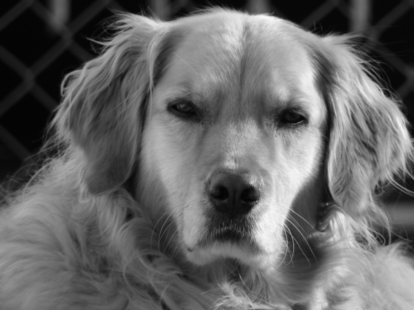
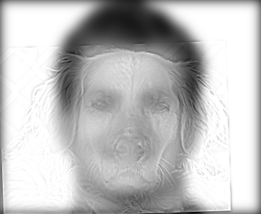
Payton Tolle + brown bear
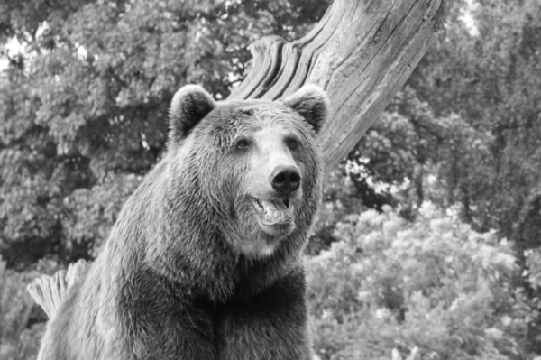
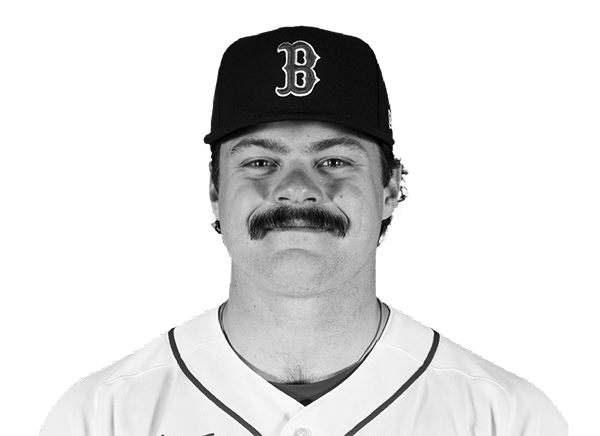
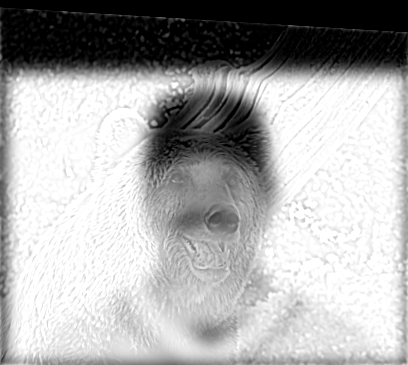
Part 2.3: Gaussian and Laplacian Stacks
Gaussian stacks

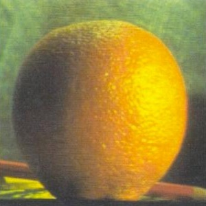
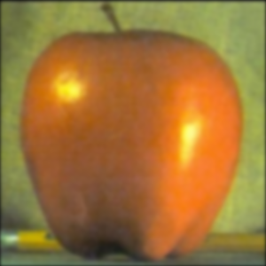
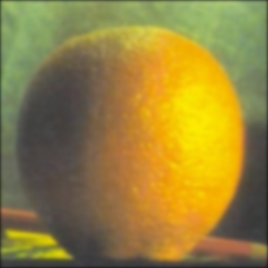
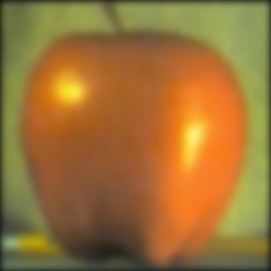
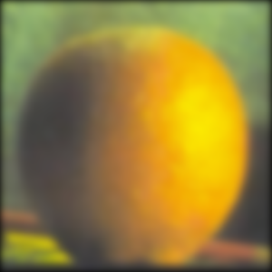
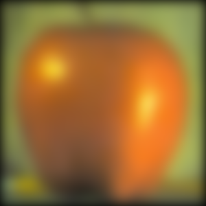
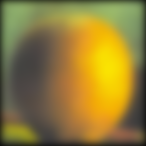
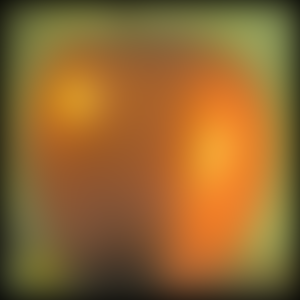
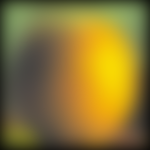


Laplacian stacks
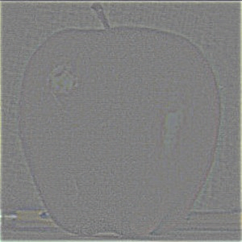
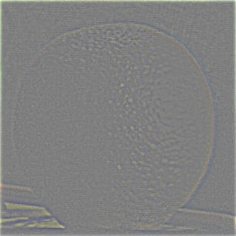
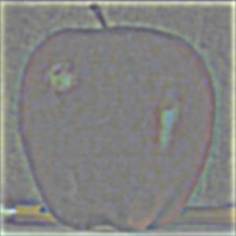
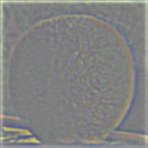
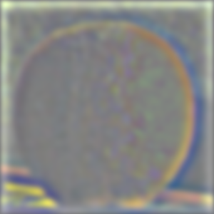
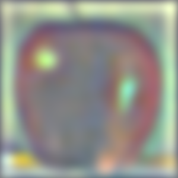
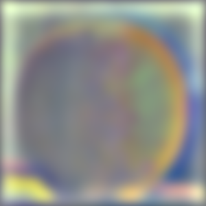
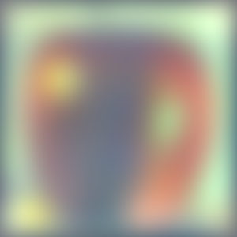
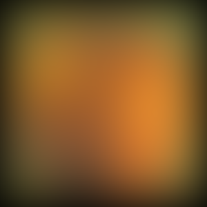
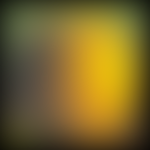
Recreating Figure 3.42 (a)–(l)
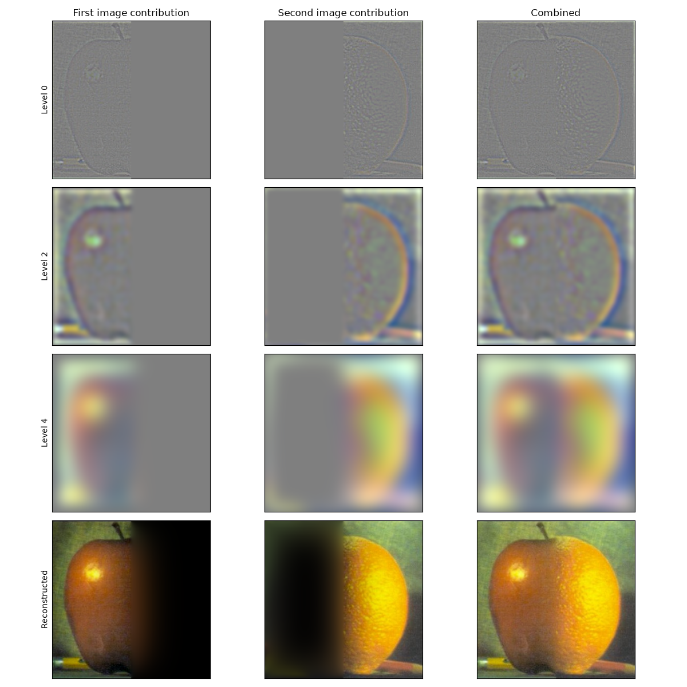
Part 2.4: Multiresolution Blending
Apple + orange
Golden retriever + Drake Maye
Favorite blend: process
Brown bear + Payton Tolle
Reflection
The most important and interesting thing I learned from this project is that high-frequency information is not inherently good or bad- its value depends on the task. For example, in sharpening, I strengthened high frequencies to emphasize detail, but in edge detection, I suppressed some of those frequencies first because the small intensity variations distracted from the main outlines. These different experiments helped me understand that filtering involves deciding which information matters for the result, rather than simply trying to preserve as much detail as possible!